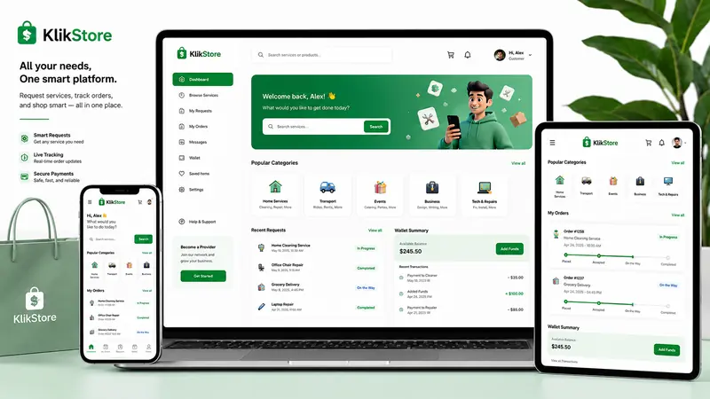

KlikStore
A service-booking platform that organizes trusted local service providers, customer requests, wallet balance, and request tracking in one responsive experience.
Problem
Service requests were scattered across messages with no clear path for categories, pricing, or status.
Delivered
Structured service cards, request flow, tracking states, wallet preview, and responsive conversion sections.
HTMLCSSJavaScriptResponsive Front-End
Read case study